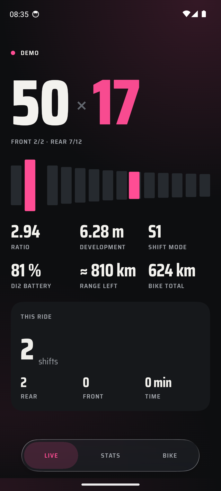
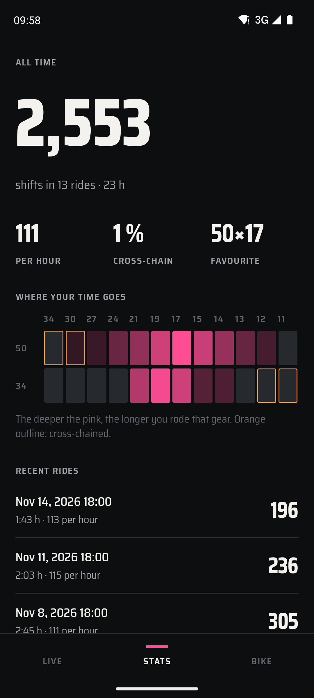
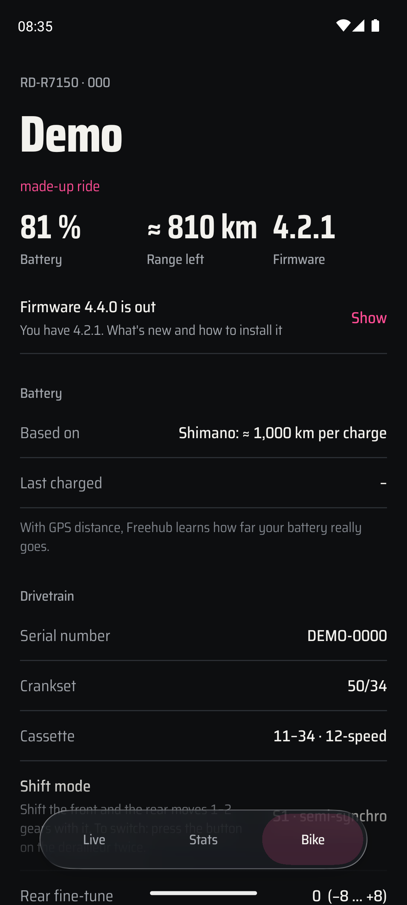

Your Di2, at a glance.
Gear, battery and every shift from a 12-speed Shimano Di2. No account.
Android 8 or newer. Free and open source under GPL-3.0.


Every shift, counted.
A multi-shift across three cogs counts as three. Freehub keeps the time you spend in each chainring and cog and draws it as a heatmap, with cross-chained gears outlined in orange.
A ride ends on its own ten minutes after the derailleur falls asleep.
Your rides stay on your phone.
No sign-in
No SHIMANO ID, no account of any kind.
One connection
Bluetooth to the derailleur, plus an update check on GitHub you can switch off.
Read only
Freehub never writes settings or firmware.

Works with 12-speed Di2.
| Group | Rear derailleur | Status |
|---|---|---|
| 105 Di2 | RD-R7150 | tested |
| Ultegra Di2 | RD-R8150 | same protocol |
| Dura-Ace Di2 | RD-R9250 | same protocol |
| GRX Di2 | RD-RX825 | same protocol |
Questions
Do I need E-TUBE PROJECT or a SHIMANO ID?
No. Freehub reads the Bluetooth service bike computers use.
Can it change my shift settings?
Not yet. Version 0.1 only reads.
Does it work with 11-speed Di2?
Untested. 11-speed needs Shimano’s EW-WU111 wireless unit.
Where does the protocol come from?
From a real RD-R7150, documented byte by byte in PROTOCOL.md.